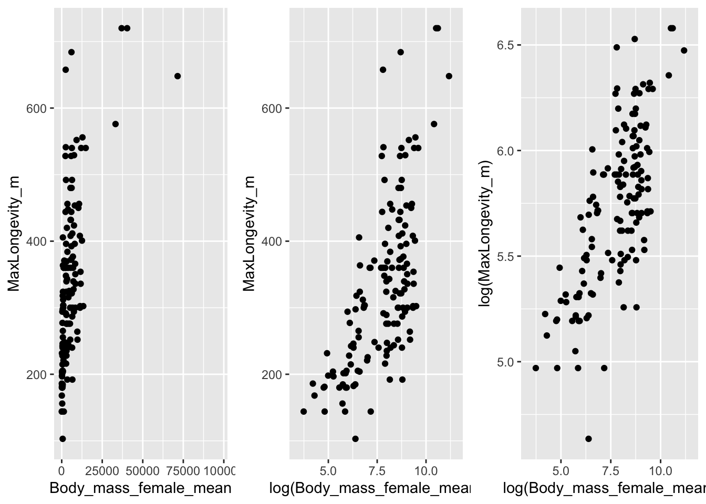
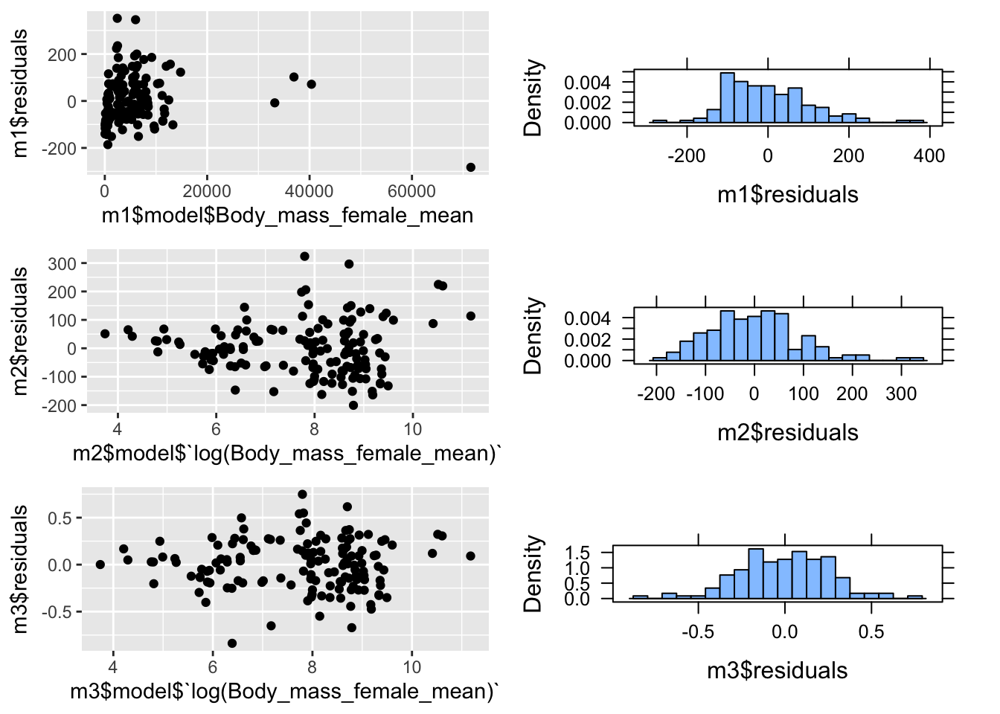
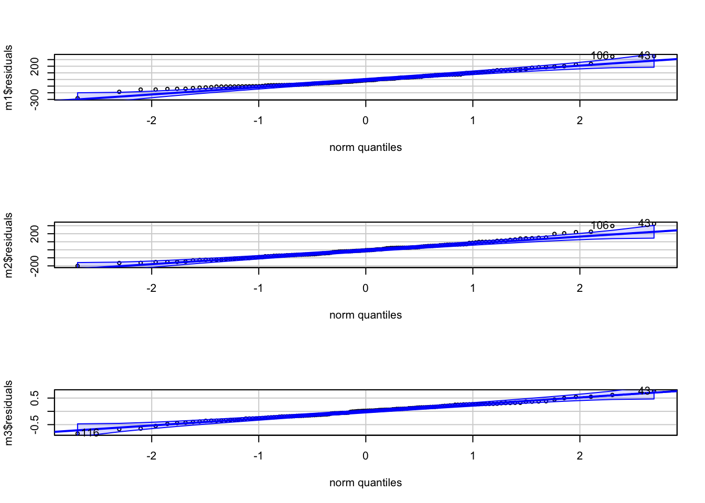
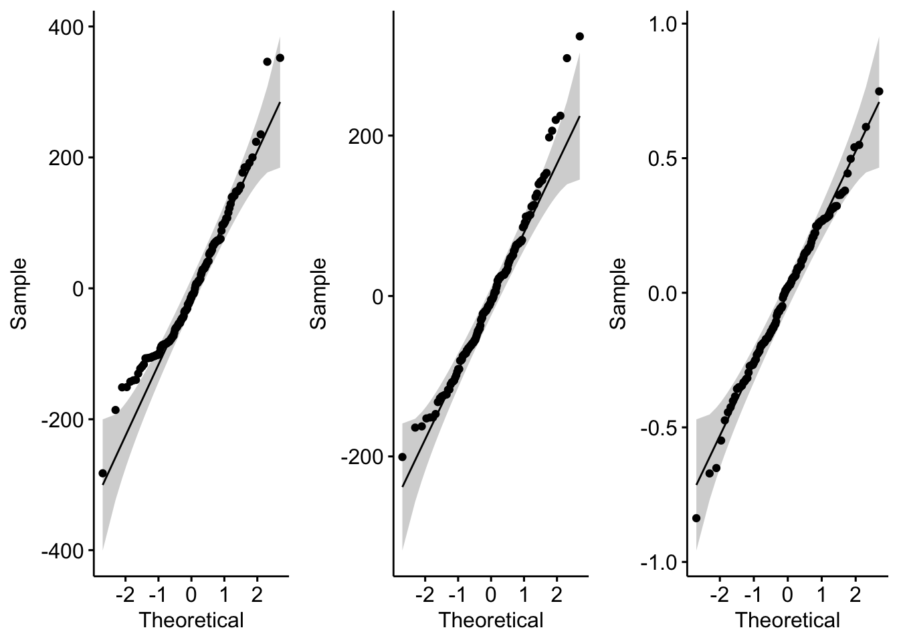
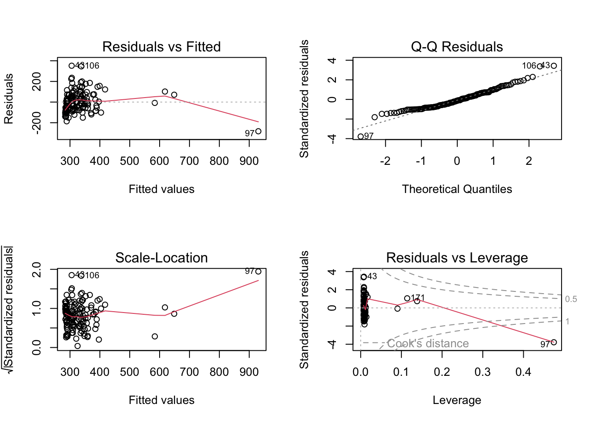
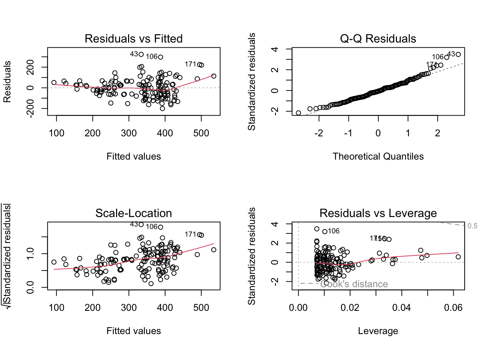
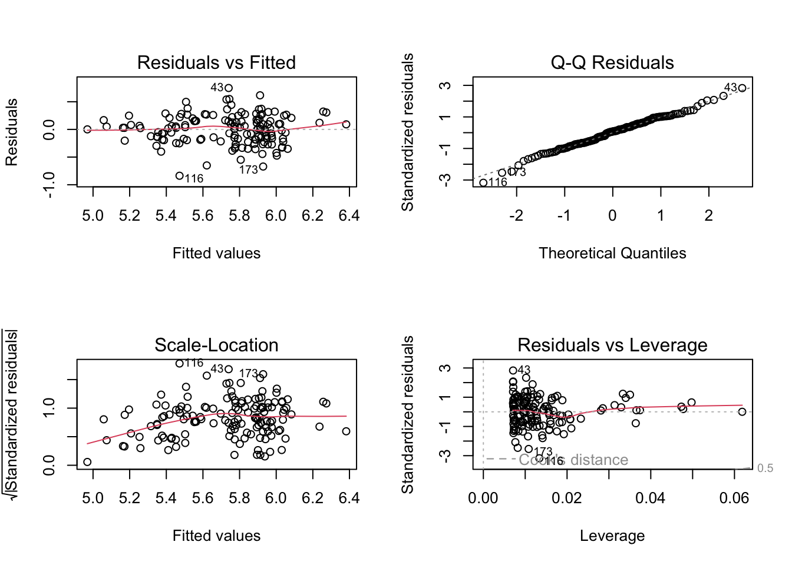

library(tidyverse)
library(cowplot)
library(mosaic)
f <- "https://raw.githubusercontent.com/difiore/ada-datasets/main/KamilarAndCooperData.csv"
d <- read_csv(f, col_names = TRUE)Exercise 09 Solution
• Solution
- Using the {tidyverse}
read_csv()function, load the “KamilarAndCooperData.csv” dataset from GitHub as a “tibble” named d.
Step 1
Step 2
- From this dataset, plot lifespan (scored as MaxLongevity_m in the dataset) versus female body mass (scored as Body_mass_female_mean). Is the relationship linear? If not, how might you transform one or both variable to more closely approximate a linear relationship?
p1 <- ggplot(data = d, aes(x = Body_mass_female_mean, y = MaxLongevity_m)) + geom_point()
p2 <- ggplot(data = d, aes(x = log(Body_mass_female_mean), y = MaxLongevity_m)) +
geom_point()
p3 <- ggplot(data = d, aes(x = log(Body_mass_female_mean), y = log(MaxLongevity_m))) +
geom_point()
plot_grid(p1, p2, p3, nrow = 1)## Warning: Removed 72 rows containing missing values or values outside the scale range
## (`geom_point()`).
## Removed 72 rows containing missing values or values outside the scale range
## (`geom_point()`).
## Removed 72 rows containing missing values or values outside the scale range
## (`geom_point()`).
We see the cleanest linear relationship between the two variables when both are log transformed.
Step 3
- Run linear models of:
- lifespan ~ female body mass
- lifespan ~ log(female body mass)
- log(lifespan) ~ log(female body mass)
m1 <- lm(MaxLongevity_m ~ Body_mass_female_mean, data = d)
m2 <- lm(MaxLongevity_m ~ log(Body_mass_female_mean), data = d)
m3 <- lm(log(MaxLongevity_m) ~ log(Body_mass_female_mean), data = d)Step 4
- Generate residuals for all three linear models, plot them by hand in relation to the corresponding explanatory variable, and make histograms of the residuals. Do they appear to be normally distributed?
p1 <- ggplot(data = NULL, aes(x = m1$model$Body_mass_female_mean, y = m1$residuals)) +
geom_point()
p2 <- ggplot(data = NULL, aes(x = m2$model$`log(Body_mass_female_mean)`, y = m2$residuals)) +
geom_point()
p3 <- ggplot(data = NULL, aes(x = m3$model$`log(Body_mass_female_mean)`, y = m3$residuals)) +
geom_point()
p4 <- histogram(m1$residuals, nint = 20)
p5 <- histogram(m2$residuals, nint = 20)
p6 <- histogram(m3$residuals, nint = 20)
plot_grid(p1, p4, p2, p5, p3, p6, nrow = 3)
Based on these plots, the m3 residuals appear to be most closely to normally distributed. The m1 residuals are clearly not, and the m2 residuals seems to show increasing variable with log(female body mass)
Step 5
- Generate QQ plots for all three linear models. Based on visual inspection of these plots, do the residual appear to deviate from being normally distributed?
par(mfrow = c(3, 1))
car::qqPlot(m1$residuals)## 43 106
## 28 71car::qqPlot(m2$residuals)## 43 106
## 28 71car::qqPlot(m3$residuals)
## 116 43
## 77 28# or
par(mfrow = c(1, 1))
p1 <- ggpubr::ggqqplot(m1$residuals)
p2 <- ggpubr::ggqqplot(m2$residuals)
p3 <- ggpubr::ggqqplot(m3$residuals)
plot_grid(p1, p2, p3, nrow = 1)
Again, the m3 residuals look as if they do not deviate substantively from normal. Residuals for m1 and m2, by contrast, do appear to deviate from normal, with a large number of points falling outside of the confidence band in the QQ plots.
Step 6
- Run the
plot()command for all three models and visually inspect the resultant plots. What do the plots suggest about whether the assumptions for regression are met for any of these models?
par(mfrow = c(2, 2))
plot(m1)
plot(m2)
plot(m3)
The plots suggest that m1 and m2 residuals deviate quite markedly from normality,
Step 7
- Run Shapiro-Wilks tests (e.g., using the function
shapiro.test()on the residuals for all three models. What do the results of these test suggest about the whether your data meet the assumptions for using simple linear regression?
shapiro.test(m1$residuals)##
## Shapiro-Wilk normality test
##
## data: m1$residuals
## W = 0.96352, p-value = 0.0008238shapiro.test(m2$residuals)##
## Shapiro-Wilk normality test
##
## data: m2$residuals
## W = 0.97515, p-value = 0.01131shapiro.test(m3$residuals)##
## Shapiro-Wilk normality test
##
## data: m3$residuals
## W = 0.99319, p-value = 0.7403The p value for the Shapiro-Wilks test is less than 0.05 for both the m1 and m2 residuals, leading us to reject the null hypothesis that that they are normally distributed (or, better put, that they do not deviate more than expected from normality). The p value for the test of the m3 residuals is >> 0.05, leading us to not reject the null hypothesis that that they are normally distributed.